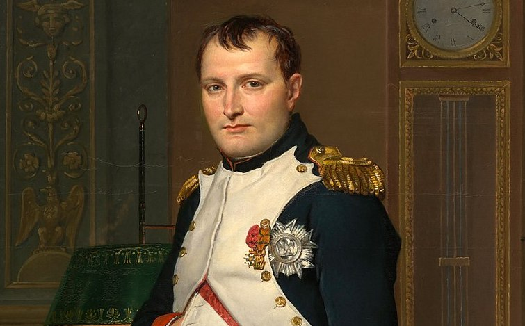

¿QUIEN FUE?
NAPOLEÓN I BONAPARTE FUE UN MILITAR Y ESTADISTA FRANCÉS, GENERAL REPUBLICANO DURANTE LA REVOLUCIÓN Y EL DIRECTORIO, Y ARTÍFICE DEL GOLPE DE ESTADO DEL 18 DE BRUMARIO QUE LO CONVIRTIÓ EN PRIMER CÓNSUL DE LA REPÚBLICA EL 11 DE NOVIEMBRE DE 1799.

¿QUE HIZO?
NAPALEON ES CONSIDERADO UNO DE LOS MEJORES MILITARES EN LA HISTORIA DEL MUNDO, PERO LA PREGUNTA ES QUE HIZO?, NAPOLEON FUE UNO DE LOS MAYORES PROBLEMAS DE ESPAÑA, AL IGUAL QUE PARA FRANCIA, ATACANDO A FRANCIA DESPUES DE LA REVOLUCIÓN FRANCESA E INVADIENDO A ESPAÑA ASEGURANDO LA DERROTA DE PORTUGAL, AL IGUAL QUE SUS GUERRAS
¿COMO LO HACIA?
UNA DE SUS MEJORES ESTRATEGIAS FUE LA DIPLOMATICA, FUE CON ESPAÑA MOSTRANDO SU LADO DE ALIANZA PERO INVADIENDO Y TOMANDO CONTROL DE ESPAÑA, Y ARRESTANDO A LOS REYES D ESA EPOCASS